Responsive, 5e tour : les points à mieux dessiner
Tu as validé 1 C, 2a, 4b et 7c : je les code pendant que tu réponds ici. Cette page reprend les cinq points où tu as écrit « fais mieux », plus ta question sur le prix des radiateurs. Chaque image est le vrai site local, la proposition posée dans la page : rien de cette page n'est encore codé.
2b. Couleur tapée : l'application prévient et propose
Ta consigne. « L'app l'informe que le contraste peut être faible et lui propose une couleur bien visible (7:1), visible (4,5:1). »
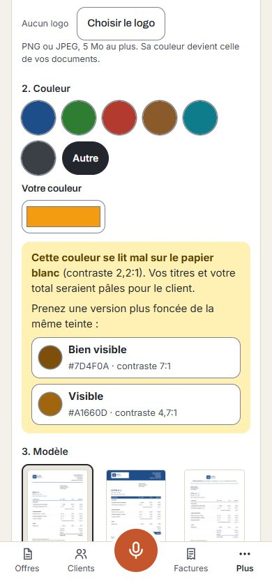
Quand l'encadré paraît : dès qu'une couleur tapée, ou celle du logo, est sous 7:1. Les six couleurs proposées sont déjà à 7:1 et ne le déclenchent jamais.
- Sous 4,5:1 (l'orange) : les deux propositions sont plus foncées que la couleur tapée.
- Entre 4,5 et 7:1 (le pétrole #0F7C8C, 4,9:1) : « Visible » est la couleur tapée elle-même, « Bien visible » la fonce à 7:1 (#0C616D).
- Si l'artisan ne choisit rien : sa couleur reste, et le document la fonce juste assez pour 4,5:1, comme aujourd'hui.
Ton choix
3. Le bouton « + Ligne », avec le total dans « Générer »
Ta remarque. « Le plus dans le bouton doit être mieux. » Le total passe dans le bouton principal (ton choix A) ; trois dessins pour l'ajout :
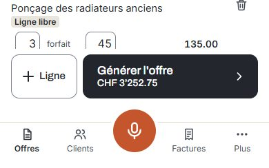
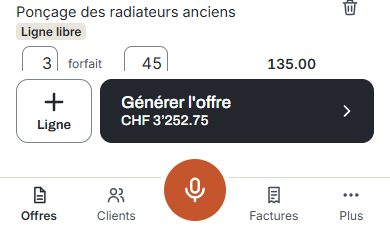
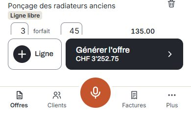
Ton choix
4a. Ligne libre : une bande qui dit l'état et l'action
Ta remarque. « Fais mieux, ça doit être bien en UI/UX. » La pastille mélangeait l'étiquette et le bouton. Ici, une bande de 56 px sous la ligne, toute la largeur touchable : ce qui se passe (« Pas dans votre catalogue »), ce qu'on y gagne (« Ajoutez-le pour la prochaine dictée »), et la flèche qui ouvre la fiche validée en 4b.
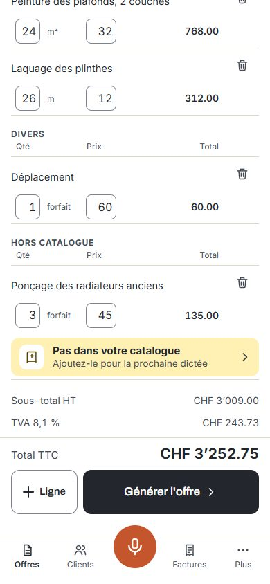
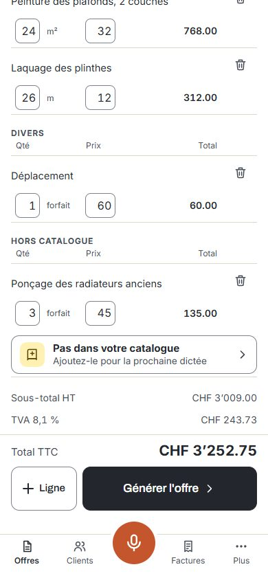
Ton choix
4b. Ta question : des radiateurs plus chers sans toucher au catalogue
Réponse, vérifiée dans le code. Oui, c'est déjà possible : un prix tapé sur une ligne de l'offre ne change que cette ligne (la requête n'écrit que dans la table des lignes). Le catalogue garde son prix.
Le piège est ailleurs. « Rattacher à un produit » remplace aujourd'hui le nom, l'unité et le prix de la ligne par ceux du catalogue : tes 45.00 le forfait deviendraient 9.00 le m², sans prévenir.
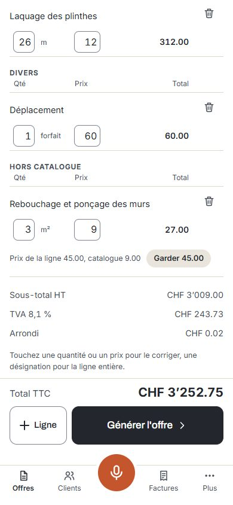
L'unité aussi change (forfait devient m²) alors que la quantité reste 3 : la fiche « Déjà au catalogue » le dira avant le toucher, quand les deux unités diffèrent.
Ton choix
5. Archiver et supprimer : les icônes dans la carte
Ta remarque. Au 4e tour, la place des icônes restait vide sur les cartes qu'on ne survole pas. Ici, la carte prend toute la largeur ; au survol, le montant glisse vers la gauche et les icônes paraissent dans la carte, après un filet.
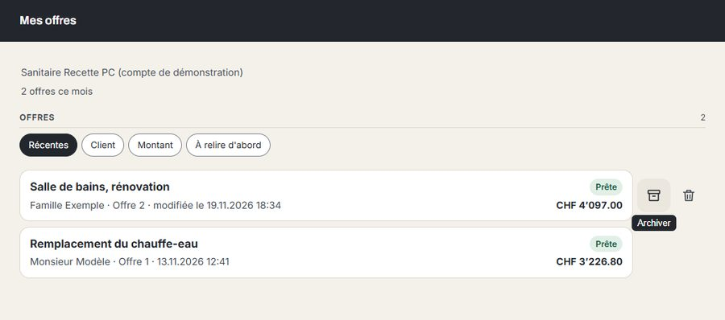
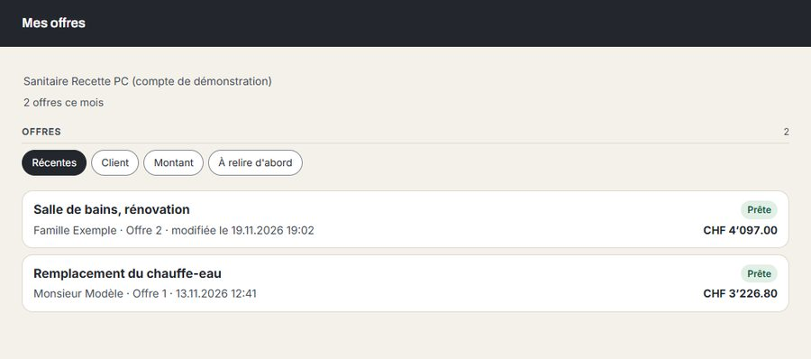
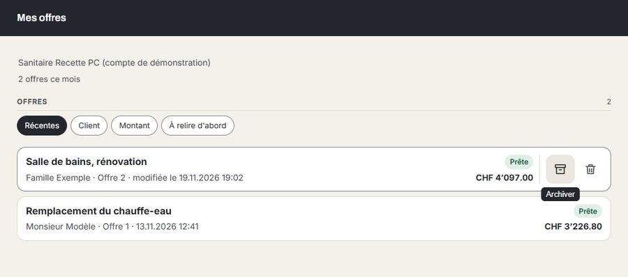
Ton choix
7a. Le bandeau à la place du total, aux mesures de la barre
Ta remarque. « Super mal intégré, pas les bons espaces. » Le bloc noir est retiré. Le bandeau reprend la ligne du total telle quelle : même hauteur (51 px), même marge, même fond. Le message est à la place de « Total TTC », « Annuler » à la place du montant, son bord droit aligné sur celui de « Générer l'offre » (764 px, mesuré).
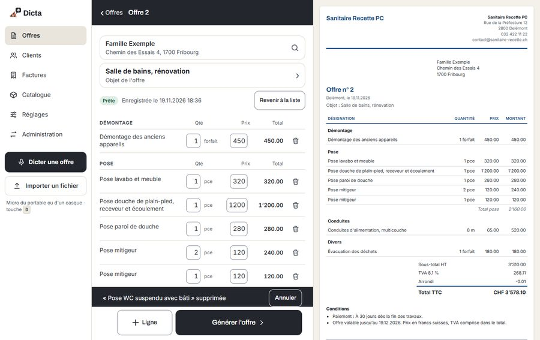
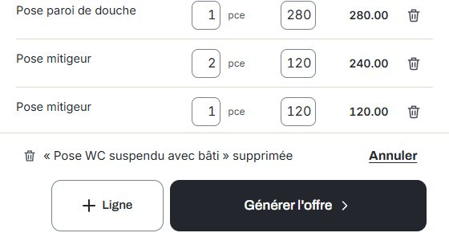
Ton choix
Copier mes réponses
Ce texte se remplit avec tes choix. Copie-le et colle-le dans la conversation.
Copié.